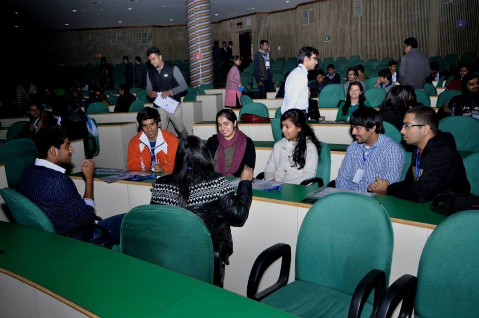

IEEE Delhi Student Congress 15
Execomm members from BVPIEEE represented the student branch at IEEE Delhi Student Congress. It is an initiative by IEEE Delhi Section on the lines of the IEEE All India Student Congress(AISC). The main motive of DSC is to improve networking across student branches within the Delhi section and the student branch of BVCOE took active part throughout the Congress making better interactions with student branches accross Delhi.
Having previously been hosted by IEEE NSIT Student Branch and IEEE JMI Student Branch at their respective institutions, IEEE DTU Student Branch was given the responsibility of hosting DSC 2015 and BVPIEEE took immense pleasure in congratulating the student branch of IEEEDTU for a good show.
It was an enriching experience for BVPIEEE as the student branch took home new friends; colleagues; lots of knowledge; and industrial exposure. Panel and general discussions among the attendees could make the Delhi Section as a whole aware of the issues with their co-branches in Delhi. It was a platform to discuss issues, share grievances and take steps for implementation of their feasible solutions for betterment of IEEE Delhi Section.
Day 1, 10 January 2015
First day of the Congress started with the registrations of the attendees who were each given the congress kits. It was followed by a group activity aimed at improving the interaction of the attendees with people NOT belonging to their own student branches. The participants were distributed into teams and each team was allotted one volunteer. Each team, moderated by their volunteer, played a game called ‘What If?’ which was based on situational questions. Members from BVPIEEE took active part in the interactive activity and proved to be among the most aware student branches of Delhi section.
The inauguration ceremony began with lamp lighting, which was followed by welcome address by Dr. S.Indu, the Branch Counselor of the IEEE DTU Student Branch. She talked about the achievements and plans of DTU student branch of IEEE. Dr. Indu was followed by Prof. Mini Shaji Thomas (Executive Vice-Chair, IEEE Delhi Section), the Guest of Honor for the day whotalked about the benefits of being the members of IEEE as students and how to make the best use out of it. Mr. Ravi Batra, Chairperson of the IEEE DTU Student Branch, was the next to address the gathering. He informed the audience about the various events that IEEE DTU organizes round the calendar.This was followed by a short tea break where the attendees were seen interacting amongst themselves so as to improve networking and discuss about their branches and plans. After the tea break, Prof. Mini Thomas presented a keynote on the topic of ‘Smart Cities’- a new concept in modern technically sound societies of the world. The Indian Government has taken the following four important features into account for tagging a city as smart:-
- Citizens
- Employment
- Quality of life
- Infrastructure

She explained all the above points in detail and concluded her note with a summary of the basic concepts of a smart city. She asked students to contact her freely in case of any queries.
The next in line to acknowledge the podium was Dr. Prerna Gaur who talked about the activities of Delhi section and the history and life of IEEE so far. She talked about prominent chapters of Asia Pacific region and mentioned that BVPIEEE is the only student Chapter in Asia Pacific region which has the Honour Society- HKN. (Lambda Eta Chapter). She talked about the SIGs conducted in student branches and also about the affinity group – ‘WIE: Women in Engineering’ and told about the activities held in the various IEEE branches and the student competitions organized by IEEE globally. Dr.Gaur then invited Dr. Rachana Garg on the stage, who gave a presentation on WIE and PES. She went on about the plus points of being a WIE member and the WIE activities that are organized by different Student branches. Next to take the stage was Ms. Disha Chhabra (Author and DCE/IIM-C Alumni). She talked about making the right choices when it comes to one’s career.She was inspiring and made the attendees introspect into their career goals and decisions.
After the inspiring talk, the Congress broke for lunch. Lunch concluded and a group activity was initiated wherein the members were again divided into groups and a volunteer was assigned to each group. A poster making competition was held wherein they were assigned a topic/issue and were given 30 minutes to make the poster to present the same on the stage. All the members of BVPIEEE took active participation in their respective groups and interacted with immense enthusiasm. As the group activity concluded, the UAS – DTU (Unmanned Aerial Systems) team showcased their project along with a video of it onstage. A lot of people appreciated the innovation of the students and huge rounds of applause ensued.The last talk of the day was ‘IEEE Student Branch Administration - Running your Student Branch’; held by the Delhi SAC. The presentation was delivered by Mr. Gitansh Anand, Delhi Section Student Representative.
Day 2, 11 January 2015
The event commenced at 11:00 am the next day. Dr. Amit Roy, who is currently working with Freescale (India) as the Senior Principal Expert in Low Power Design Methodology and Power Integrity and Signal Integrity group took the participants through his presentation mainly along the lines of algorithmic development of low power design methodology and power/signal integrity of high speed communication interface.
The talk was followed by a tea break where everyone gathered and interacted with each other enthusiastically. After the tea break Mr. Jitin Chawla, co-founder director, Centre for Career Development interacted warmly with all the attendees putting up questions and sharing inspirational stories. Mr. Chawla talked about the key factors including aptitude, personality, creativity and conventionality.Next in line was Mr. Suraj Raman, a city trainer, project head and mentor at Make a Difference (an NGO) talked about how having a privileged background is something that can be shared and how English as a language should be promoted. He encouraged participants to involve in programs for welfare and betterment of the society.
Post lunch, the student branches participated in the SB Presentation competition. Attendees from individual Student Branches were given the opportunity to give presentations at separate stalls to showcase their branch activities and share what they do. BVPIEEE had proudly put up their stall and Arunima Sharma and Priyansh represented the SB via the stall. IEEE-HKN, WIE and the 6 SIGs under BVPIEEE were all represented. The organisers were impressed by the stall as it was simple and sleak.
After the SB Presentation Competition, Mr. Kartik Misra, Vice Chairperson, IEEE Young Professionals, IEEE Delhi Section was welcomed. IEEE Young Professionals was started for the transition of students into young professionals and he was given the responsibility for the promotion of IEEE membership amongst fresh graduates and to provide career guidance for students and new graduates. He mainly talked about the development of any person on the whole as a techno manager and insisted on the importance of soft skills
Fresh On Campus 2014
Naman Sharma
Fresh on Campus, an informal welcome for Freshers, organised on 27 August, 2014 by BVPIEEE, was a huge success in terms of participation and response. It was the second edition of Fresh On Campus, the inagural event being a huge success in 2013. It was singularly aimed at introducing IEEE and its Student Branch, serendipitously also bridging the gap between seniors and freshers by giving them a chance to meet and interact outside of the formal confines of the classroom. There were as many as three activities organised especially for this event. The first among them being, a Plantation Drive, which is an initiative taken up by BVPIEEE, in order to make the campus cleaner and greener. The Plantation Drive had active participation from teachers as well as students of the college. Mr Daman Sood, who is a renowned member of the IEEE Delhi Section Computer Scociety also graced the occcasion with his presence. The next activity organised was a social upliftment initiative by IEEE in the form of Toy Donation for underpriveleged kids. This too was a huge success, with BVPIEEE managing to collect a substantial number of toys and books for chidren. The final and easily the most popular activity was the ICE BREAKER event, where a list of tasks was handed over to previously decided, groups of students, each group having not more than 5 participants. It was ensured though, that no two participants were from same the branch so that the first year students got a chance to interact with freshers from other branches. Tasks included finding various things on campus, which a Fresher wouldn’t easily be able to spot in the first go, clicking particular pictures and many more fun filled activities. While the participants showed incredible enthusiasm for the only event of its kind; so did the volunteers. The whole BVPIEEE committee effectively managed the event, handling the turnout of more than a 150, which in itself is no mean feat. It highly encouraged freshers to learn more about IEEE and its events at Student Branch level, effect of which was observed in the events that followed.
RAU Introduction MeetDhruv Gaba
RAU, a Special Interest group under BVPIEEE, held its orientation session on 26th September. Having being one of the most active parts of BVPIEEE, the session started with high expectations and hopes of continued efforts from the organizing team towards the promotion of robotics in college and increased participation from the student members.In this orientation the speakers, Shivam Bhardwaj and Dhruv Gaba, illuminated the students with the basics of robotics and automation control.
In the orientation students from both Electronics and Computer Science background were present. There were over 40 students present in the workshop.
Here we disseminated to the students information about the ARDUINO which is the most popular prototyping board among fledgling engineers.The motive was to encourage students to participate in Robotics competitions and to also to strengthen the fact that robotics is an amalgamation of concepts of both Electronics and Computer Science.
The response of the students was overwhelming and hence, we plan to take weekly workshops in the future.
WIE Meet 2015
Hemangini Malhotra
The WIE Affinity Group of BVPIEEE successfully organized the WIE meet 2015 on 14th March. The meet witnessed an overwhelming response with a turnout of more than 70 registrations from various Student Branches, even from outside Delhi defying the misconception of the meet meant only for women.
Ms. Rashmi Anand, our guest of honor, along with our Student Branch Counselor, Mrs. Yogita started the meet by highlighting the social issues faced by women of our country. It was followed by a healthy and interactive session suggesting the solutions and viewpoints of students from various Student Branches. Followed by a round of refreshments, a fun event named ‘Finding Namo’ took place wherein participants had to find people with associated things mentioned in the questions. To increase the interaction more between the student groups, another icebreaker event followed where students were divided in a team of five and worked their minds off for the brainstorming questions. All the events were taken with astonishingly high enthusiasm by the participants.
This was followed by introduction to the BVPIEEE team, all the SIG’s and chapters associated with it and WIE Affinity group accomplishments. There were presentations from other Student Branches as well.

The event concluded with an informal discussion round highlighting various issues faced by different student branches during the running of WIE affinity groups or IEEE in general. A few of the problems discussed are as follows:
- Ways to increase technical activities in WIE
- Ways to spread awareness regarding WIE, and that men can and should be a part of WIE and its meets.
- Backup plans in case of technical glitches faced in Student Branch Competitions.
Interactive Session of IEEE IAS
Anish Anand
The Industrial Application Society(IAS) interaction session was held on November 26th,2014 (Wednesday) at IIT, Delhi by Dr. Blake Lloyd, President, IAS(IEEE) , accompanied by Dr. Peter Magyar IAS CMD Chair. The session comprised of a faculty interactive session/ lecture scheduled between 11:00a.m to 12:00 noon, followed by a lab visit (12:00 noon-1:00pm).
The session started with Prof.(Dr.) Subrata Mukhopadhyay (IEEE IAS executive board(2014-15)) addressing the gathering and welcoming Dr. Blake and Dr. Peter on their 9days trip to India. Mr. Blake Lloyd,the president,further talked about the initial founding days of the society. He discussed about the scope of IAS, as a transnational organisation in the advancement of theory, practice, manufacture and development of electrical systems. The president showed how the society is, in itself different from other IEEE societies in terms of giving industrial exposure to its members, along with opportunities to meet, talk, discuss with other researchers and industry experts in the field itself. Moreover, he highlighted the opportunities its members can avail , which include informative meetings, seminars, conferences, workshops along with professional publications.
The session was carried forward by Dr. Peter who discussed about the statistics, comprising of the growth rate, number of members, events, sister societies, etc. , broadcasting the regions from R-1 to R-10, and their subsequent growth in the past years(esp. India in R-10 region). The stats clearly showed how the North American based society has progressed in the past years and spread its wings across the globe. This is the reason that today there is a 50/50 balance between North America and rest of world memberships.
At last, he thanked all invities for their support in taking the society across 11,000 members(and counting), especially the sudden increasing participation from R-10 region(comprising of India). The session commenced with Dr. Subrata offering shawls to both Mr. Blake and Peter, and later,the faculty members and students joined them fofor a photograph session.
IAS Induction Ceremony
Industry Applications Society, IAS student chapter under the aegis of BVPIEEE (Student branch of IEEE in BVCOE) was recently given approval to be formed in Bharati Vidyapeeth College of Engineering, New Delhi. Induction ceremony for the same was held on 2nd March, 2015. Dr. Peter Magyar, Chairperson- Chapter and Membership Department, IAS-IEEE graced the occasion with his esteemed presence.
Along with Dr. Peter, Dr. Dharmendra Saini (Principal, BVCOE), Mrs. Yogita Arora(Branch counselor, BVPIEEE) and other respected faculty members were the guests for the event. The members of the executive committee of BVPIEEE and IAS were present for the same.

The function began with the felicitation of Dr. Peter by the Principal. After exchanging greetings, lamp lighting ceremony took place for the auspicious occasion.
Everybody attending the event was filled with enthusiasm and zest, especially Dr. Peter , who himself gave goods such as pens, badges etc to everyone and was busy interacting with the attendees.

A presentation about the college and BVPIEEE was given by the members of BVPIEEE. The presentation encompassed activities and milestones of BVPIEEE over the years. Principal sir imparted further information about the college. Following it, Dr. Peter explained in detail about IAS, various programs under its aegis & how it solves various problems faced by people around the world. He discussed about the benefits of being an IAS member and scholarships and grants that are given to aspiring students as well as faculty members. Later he had an interactive doubt session with the students and faculty where he took up doubts and explained in detail the functioning of IEEE-IAS and some of its chapters in India. Following it, Ms. Yamini Jain, Chairperson, BVPIEEE & Ms. Prerna Soni, Chairperson BVPIEEE-IAS and other members of BVPIEEE-IAS discussed about the future plans of the IAS student chapter of BVCOE.
The induction ceremony comprised of oath taking ceremony by the new inductees, which took place after the address of the afore mentioned members. It was overseen by Mrs. Yogita and Dr. Peter. Following it, Dr. Peter was shown a tour of the entire college. The lunch took place after the tour, with the guests discussing more ideas and plans.
Since all good things come to an end, the induction ceremony ended with saplings plantation. Dr. Peter, faculty and student members planted saplings in the college greens symbolizing the establishment of the BVPIEEE-IAS chapter which will bloom into fruit bearing trees.
Events by BVPIEEE @ BVEST’14
ROBO SOCCER

Robo Soccer was organized by BVPIEEE as a part of BVEST'14, technical fest of BVCOE on 28 October, 2014. There were 3 rounds in the event. Team with highest number of goals in given duration of time had been declared as qualified for next round and ultimately the winners. Total 12 teams were registered for the event.
| Faculty Coordinator: |
Prof. Abhishek Gagneja |
|
| Student Event Managers: |
Aman Garg, Anshul Sharma |
|
| Student Event Coordinators: |
Shubham Chugh, Amit Kushwaha |
|
| 1st Prize Winner: |
Mr. Kunwar Deepak, Mr. Nakul Garg (BVCOE) |
|
| 2nd Prize Winner: |
Mr. Gaurav Sharma (Lingayas University ), Mr. Mandeep Deshwal (LU), Mr. Gaurav Negi (LU), Mr. Ritesh Pal(LU), Mr. Intizar Khan (Echelon Institutions) |
ROBO WARS
ROBO WARS held during BVEST 2014 in basketball court was one interesting event. Although the participation were only three but as soon as the competition started the crowd gathered around the court to watch the robots tear each other apart. The crowd started hooting as the robots hustled and tried to throw each other out of the arena. Two of the participants ended up quitting the competition because of the heat of the competition and the fear of their robots being destroyed. It was surely one of the best robotics competition of BVEST 2014.
| Faculty Coordinator: |
Prof. Abhishek Gagneja |
| Student Event Managers: |
Mr. Rishabh Goyal, Mr. Deepak Verma, Mr.Ruccmenya |
| Student Event Coordinators: |
Mr. Sushant Lodhi, Mr. Aakash Kashyap |
| 1st Prize Winner: |
Mr. Gaurav Sharma (LU), Mr. Mandeep Deshwal (LU), Mr.Gaurav Negi (LU),Mr.Ritesh Pal (LU),Mr.Intizar Khan(LU) |
| 2nd Prize Winner: |
Mr.Mohit Pradnani, Mr.Amit Kumar Singh, Mr. Nishant Sharma, Mr.Shivaik Sehgal, Mr.Shivam Gupta |
Think On Your Feet
Think on your feet was organized by BVPIEEE as a part of BVEST'14, technical fest of BVCOE on 29 October, 2014. Think on your feet is an extempore event where a person is given a specific topic. Then he/ she had to speak for one minute on the given topic.
| Faculty Coordinator: |
Prof. Abhishek Gagneja |
| Student Event Managers: |
Mr. Shrey Bagga, Mr. Divyanshu Sharma |
| Student Event Coordinators: |
Mr. Subhav Duggal, Ms. Shefali Garg |
| 1st Prize Winner: |
Ms. Ayushi Grover |
| 2nd Prize Winner: |
Ms. Kanika Sharma, Ms. Medha Sharma |
Hack-a-thon

Use your skills to create an app or a website/web based application based on a theme which will be given on the spot. Test your creative minds in this coding marathon. Day 1 will involve 5 hrs of onsite coding. Day 2 will comprise of presenting your work. Coding can also be resumed offline.
| Faculty Coordinator: |
Prof. Varun Srivastava |
| Student Event Managers: |
Mr. Aditya Dev Sharma, Mr. Kshitij Kaushik |
| Student Event Coordinators: |
Mr. Kunal Sachdeva, Mr. Jayant Gulati, Ms. Vaani, Mr. Nikhil |
| 1st Prize Winner: |
Mr. Yogesh Madan |
| 2nd Prize Winner: |
Tie b/w Mr. Purnank Jain & Ms. Yamini Jain And Mr. Abhishek Sharma |
AD-MAD

As a part of Bharati Vidyapeeth’s College of Engineering’s annual technical fest, BVEST’14, AD-MAD was one of the fun events that were conducted by BVPIEEE. It was all about exploring the dimensions of creativity to enact funny, catchy and innovative advertisements to market a given item.
| Faculty Coordinator: |
Prof. Varun Srivastava |
| Student Event Managers: |
Ms. Dharvi Verma, Ms. Payal Mangla, Mr. Sarthak Mittal |
| Student Event Coordinators: |
Ms. Manju Shah, Ms. Kanika Sharma |
| 1st Prize Winner: |
Mr.Karandeep Singh, Mr.Parvez Hassan, Mr. Chaitanya Swami, Ms.Vishakha Kaalra |
| 2nd Prize Winner: |
Mr. Shikhar Mittal, Mr. Priyansh Singh, Ms. Arushi Arora |
Entrepreneurship Cell Meet 1.0
E-CELL, an SIG of BVPIEEE, conducted its first meet of the session on 19th November 2015. Conducted by Shrey Bagga and Ishtia Agghi, the details about the workshop are as follows:
The workshop covered three topics:
- Basics of Entrepreneurship ( by Shrey Bagga) : where the three basic rules of entrepreneurship were covered. First, what is your "why" i.e what is your reason for doing something. Second, being in the present moment and lastly, BIOS ANALYSIS( Beliefs, Improvements , Oppurtunities, Strength )
- Social Entrepreneurship (by Ravi, Representative of Saviour of the Earth Foundation); he discussed what is social entrepreneurship, how it can be achieved. He also discussed what their NGO is doing for the same and how they overcame difficulties.
- Idea Generation (by Gaurav Indra Sir) : He discussed in great detail of how can we bring out our creativity and ideas ; specially by looking in our surroundings. He threw light on how can we get our ideas patent , also about software patents. We then had a discussion with him on the latest buzz BITCOIN.
Approximate turnout: 40 people
Guest Speakers:
- RAVI ( From Saviour of the Earth Foundation)
- Gaurav Indra
Interaction:
It was quite an interactive session. People asked question about how an NGO runs , the problems they face and how they overcome it.
Also in a discussion with Gaurav Sir, people asked questions regarding what and how bitcoin functions. Also there were questions regarding idea generation.
Introductory Meet 2014
The formal BVPIEEE Introductory Meet was organised on 2nd September 2014.
The primary objectives of this meet were as follows:
1. To introduce IEEE and IEEE-HKN society from a broader perspective to freshers.
2. To share experiences, challenges and benefits of being a member.
3. To encourage them to join as a member of our student chapter.
4. To make students aware of the various SIGs run under the banner of BVPIEEE.
The event witnessed a participation of over hundred students. The meet was initiated by student representatives with a presentation elucidating benefits of joining BVPIEEE followed by a video showing all the major events conducted in the previous session. WIE-BVPIEEE commenced the event by acquainting students with Women in Engineering (WIE) and giving a presentation about the activities undertaken by it like self-defence classes, STAR program etc. Subsequently, the various Special Interest groups such as Drishti (Photography club), Robotix United, Codex BVCOE quiz club, Gamma (Gaming, Multimedia and Animation SIG) and E-Cell gave presentations illustrating their purpose and motives. The students showed keen interest in the activities of these SIGs with Student Representatives having to stay back, overtime to answer all their questions.
Lambda Eta Chapter of IEEE-HKN also gave a presentation explaining the benefits of being associated with an honour society to students. Presentation also highlighted Outstanding Chapter award won by Lambda Eta Chapter, Arizona Student Leadership Conference 2013, R10 Conference held in Hyderabad, Cognizance (E-newsletter of Lambda Eta Chapter) and various campus activities like Student Mentorship Programme and Plantation drive.
One of BVPIEEE’s new initiatives, the technical chapter of RAS (Robotics and Automation Society), was also introduced and its benefits and mission discussed in length along with an interactive demonstration.
The event served its purpose of introducing IEEE, the world’s largest professional organization, and its student branch of BVCOE, to the audience and highlighting the diverse membership benefits.
IEEE DAY 2014 AT BVCOE
BVPIEEE and its HKN chapter, the Lambda Eta Chapter, celebrated IEEE Day in October, 2014 with enthusiasm and fervour. The event marked the inauguration of its flagship event ‘IEEE-HKN Research Mentorship Program’. The program aims to bridge the gap between student and faculty members by providing students a platform to excel in the Research and Development (R&D) Department with the help of expert faculty members. The program was inaugurated by our esteemed guest Mr. Manoj Sharma of ECE Department who delivered a session on “Scope of writing a Research Paper”. Around 50 students participated in the inauguration program and were eager to be a part of the program in future. The session concluded with doubt session and feedback from students.
A robotics event named 'RoboBall' was also organized. The aim of the event was to disseminate freshers to a competition of Robotics, where the challenge was to balance a ball on a wireless bot through a devious track. The one who took the least time and balanced the ball on the bot was the winner of the competition. The event saw a participation of 50 students, even the non-fanatics of robotics joining in to learn something new.
A photowalk was organised by the Digital Arts Society (DAS) of BVCOE. The aim of this event was to make the freshers aware of a photography technique called Levitation and make them acquainted with the basic rules of how it is implemented. Levitation is the rising of human body into the air by mystical means. More than 70 photography enthusiasts participated in the event and the organizers garnered a positive feedback from the participants.
A toy-collection drive, an initiative introduced by BVPIEEE in August 2014, was also taken up at IEEE Day. The proceeds of the drive will go to Akshay Pratishthan, an NGO, and it is a small way for the students to give back to the society.
Team BVPIEEE also organized a Hand printing activity. Students gathered in enthusiasm to participate in this convivial celebration, stamping their handprints with their favourite colours as the IEEE Day cheer spread across the college.
DRISHTI MEET 1.0
Drishti, the Photography and Videography SIG of BVPIEEE conducted its first meet of the session on 10TH October. It was conducted by Arjun Kumar, the Creativity Head of BVPIEEE. Details go as follows:
Topic: LIGHT PAINTING AND PANORAMAS
Things Taught:
1. Panoramas
2. Light painting
Light painting is a photographic technique in which exposures are made by moving a hand-held light source or by moving the camera. The term light painting also encompasses images lit from outside the frame with hand-held light sources. This technique was carried out by students using their smartphones. All students downloaded apps in their phones which helped them to control their shutter speed. After this, a source of light (here a torch) was moved around by them and they were able to trace the path of light.
Panoramic photography is a technique of photography, using specialized equipment or software that captures images with elongated fields of view. It is sometimes known as wide format photography. During the Drishti panoramas weren’t taught by using a app in the student’s smart phones. The technique used was to take a series of shots by moving our camera about a horizontal straight line. Then these pics were merged into Photoshop giving a perfect panoramic shot.
Turnout: Over 25 students turned up for the workshop. All of them were people having a passion for photography who loved taking pics from their smartphones.
Dr. Vikram Sarabhai Rotating Shield Quiz 2015
BVPIEEE, the IEEE student branch of Bharati Vidyapeeth’s College Of Engineering conducted the 8th edition of Vikram Sarabhai Rotating Shield Quiz inter-college quiz competition on 4th February, 2015 in the college auditorium.
The quiz is one of the premier events of our student branch. This year too, the event saw a stupendous success. Statistics bear out the enormous response that was received as more than 150 ardent teams participated – most of them comprising of two members each, barring some lone wolves who battled like a one-man army. Prizes up to Rs. 10,000 were up for grabs.
The event kicked off with an inaugural ceremony initiated by our Honorable Principal, Prof. Dharmender Saini and, Branch counselor, Mr. Rahul Bahl. The quizmasters for the quizzing extravaganza were Karthikeya Ramesh, Subhav Duggal and Aryaman Nath. The quiz had three rounds. The teams gave a stiff competition to each other. Out of the 150 participating teams, 30 qualified. From the top 30, the top 6 teams were selected. And after a tough battle of brains, the top 3 position holders were announced. The top three teams that made it to the podium after dodging the questions were:
1. Shashank Singh and Shashwat Nagar from NSIT
2. Mohd. Fahad and Lavanya Singh from DTU
3. Aditya and Shivendra from DTU
The NSIT Collegiates walked away with the top spot. Meanwhile DTU students ruled the roost, grabbing two out of top three positions. In addition to the cash prizes, the winners were also awarded certificates of honour. The winners of the First prize were also awarded a shield. Finally, the event was brought to a conclusion by Mr. Rahul Bahl’s golden words.
Sagacious and astute answers kept the spirit of competition alive. All in all, it was an engrossing and stimulating event that lived up to its billing as one of Delhi's top inter-college quizzes. The success of the event left the avid quizzers to earnestly wait for the next edition.